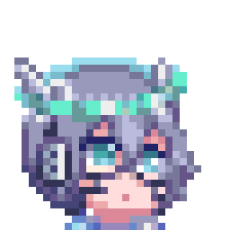

| NAME | Teno Micromochi
一微餅ての
|
| ALIAS | Tenokun Teno |
| AGE | 20+ |
| SEX | Male
男
|
| GENDER | Undefined ;3 |
| LANG | JA / EN |
This is my personal little corner on the web.
I’ve gathered all sorts of things I’ve made here,
so feel free to explore and play around as much as you like!
ここは僕の個人サイトだよ
作ったものをいろいろ置いてあるよ、遊んだりみていってね
Hi, I'm Teno! I’m a big fan of Y2K
(old web aesthetics, Heisei retro vibes, and cyberpunk styles, etc…)
I’m a villain who bootlegs pixel art, chiptunes, and web tools.
Nice to meet you!
「ての」だよ。Y2K美学 (オールドウェブ・平成レトロ・サイバーパンクetc…)が好きな
ドット絵・チップチューン・ウェブツールの密造が好きな極悪人だよ。
よろしくね!